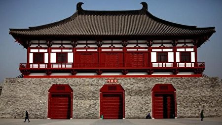

李賀天資聰穎、刻苦學習，使他的文學實力較於同年高出好幾截，在十八歲那年滿懷希望
背井離鄉去求取功名。唐憲宗元和二年（807年），李賀至東都洛陽準備參加府試，順利通過後打 算去長安應禮部試。他的應試詩《河南府試十二月樂詞並閏月》，記錄青年詩人初試鋒芒時那種意氣風發、才華橫溢的神情。這組詩既符合試帖詩切題要求，又能將詩人妙趣橫生藝術意想和含而不露的諷喻，很有分寸的表現出來。
然而，卻因為李賀父親之名晉肅與進士音近，那些忌妒李賀才能的人便以避諱為理由阻撓他
參加科舉，雖然韓愈替他不值寫了《諱辯》替他出聲，但遺憾的是李賀最終還是落第。
在屢次的官途崎嶇後，李賀開始南北遊歷，然而南北遊歷並不能消除李賀胸中鬱結的愁
悶，加上體弱多病、經濟拮据，返家後不久，終因精神和肉體上雙重折磨於二十七歲時離開人世。
從具有抱負，到屢次落第，而後選擇施展抱負，最終南北遊歷，不勝唏噓。